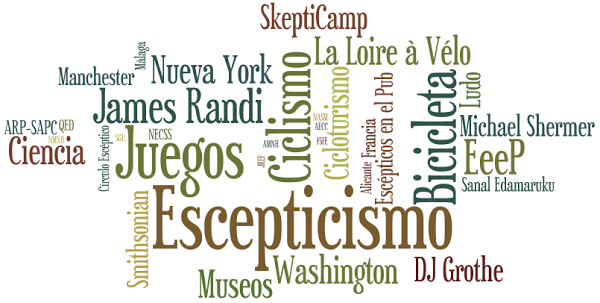

Entrada de los estudios de Radio Televisión Española en Prado del Rey.
Source: Daniel Sánchez Badorrey @
Wikimedia Commons -
CC BY-SA
Encuentro en mi buzón la respuesta de la Defensora del Espectador de RTVE a mi queja por la masiva programación religiosa impropia en un medio público de un Estado aconfesional. La petición iba en la misma línea que la queja realizada por Europa Laica y el Observatorio del Laicismo.
El próximo Sábado 6 de Abril tendremos una nueva edición de Escépticos en el Pub Madrid con un tema muy apropiado para estas fechas. Además de una gran charla, finalmente hemos encontrado la ocasión perfecta para usar como cartel el magnífico trabajo de restauración de Cecilia Giménez.
El ponente será Miguel Ángel Sabadell, Licenciado en Astrofísica por la Universidad Complutense de Madrid y Doctor en Física Teórica en la Universidad de Zaragoza. Es editor de Ciencia en la revista Muy Interesante y autor del blog La Ciencia de tu Vida (@cienciadetuvida).
El próximo Sábado 16 de Marzo vuelve Escépticos en el Pub Madrid, con un tema que esperamos genere un buen debate, con un sano e interesante intercambio de opiniones.
La charla será impartida por Almudena Martínez, humanista y sexóloga, y Montse Ibañez, matemática. Cuentan que se conocieron en un curso sobre sexualidad humana, y desde entonces vienen definiendo lo que consideran una visión novedosa sobre el erotismo y la sexualidad. Esto con el tiempo les llevó a fundar su propia consultora especializada en sexualidad: Cassire (@cassireworld)
Hace unos días publiqué una Guía para visitar el CERN que tuvo bastante éxito y mucha gente me ha solicitado más información sobre la visita. Para completar en lo posible, aunque sin entrar a valorar aquello que puede encontrarse fácilmente en Google sobre el CERN, voy a relatar mi visita añadiendo toda la información de tipo práctico que crea útil.
Dentro de tres días, el próximo Miércoles 30 de Enero, estaré en Ginebra para una visita que llevo mucho tiempo planeando: la Organización Europea para la Investigación Nuclear que todos conocemos por sus siglas en francés CERN (Conseil Européen pour la Recherche Nucléaire).
Tras una introducción para despistados (muy despistados) entraré al propósito de esta entrada, una guía rápida y fácil para visitar el CERN, dado que es mucho más sencillo y asequible de lo que la gente cree.
Algunos recordaréis (y los que no, ya lo sabéis) que en Julio del pasado año tuve el placer de participar en la PiWeek (Personal Innovation Week), una iniciativa muy interesante por parte de Kaleidos (una empresa madrileña orientada al software libre con la que tengo únótimë lazos). Esta iniciativa consiste en permitir cada seis meses que durante una semana completa todos los empleados de la empresa organicen y participen en proyectos totalmente personales (suyos o de otro compañero).
El próximo Sábado 2 de Febrero vuelve Escépticos en el Pub Madrid tras el parón navideño tras la gira por España de Sanal Edamaruku. Para la vuelta hemos escogido un tema que siempre suscita mucho interés: las vacunas.
La Doctora en Ciencias Químicas Margarita del Val Latorre, Investigadora del Centro de Biología Molecular Severo Ochoa (CSIC-UAM) y asesora de la Agencia Europea de Medicamentos, nos presentará su charla ¿Vacunas? ¡Póntela, pónsela!
En Diciembre se abrió el registro para la edición 2013 de la Northeast Conference on Science & Skepticism (@NECSS), que este año se llevará a cabo del 5 al 7 de Abril en la magnífica ciudad de Nueva York. No quería dejar pasar la oportunidad de recordarlo, no quedarán muchas entradas disponibles pero siguen quedando.
Repito la entrada que publiqué hace ahora un año con datos sobre las partidas que jugué en 2011. Generó entre bastantes lectores comentarios y mucha curiosidad por algunos juegos. En esta ocasión puedo además comparar con los datos del año anterior, y no he podido resistir la tentación de crear una nueva nube ponderada de tags.

Se termina 2012. Consumo las últimas horas y creo que puedo decir que he agotado al máximo el año. Para lo bueno y para lo malo.


{kind=link}